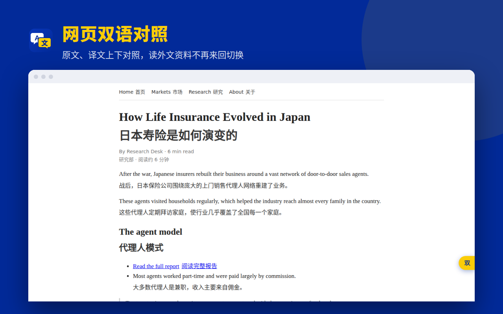
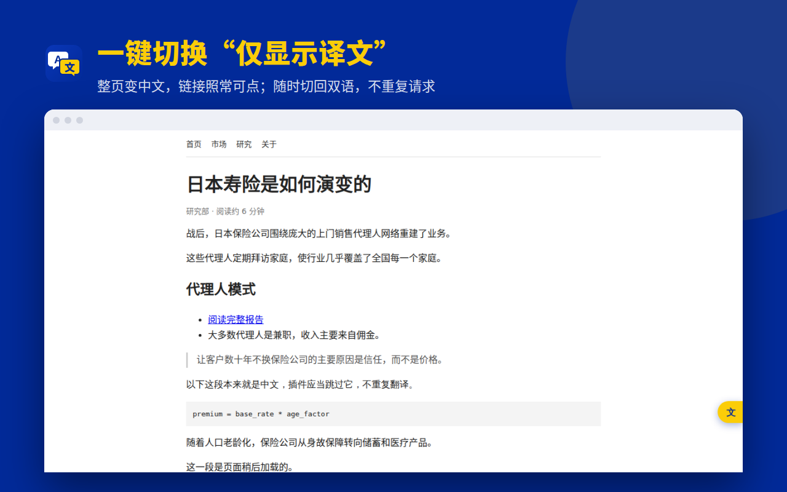
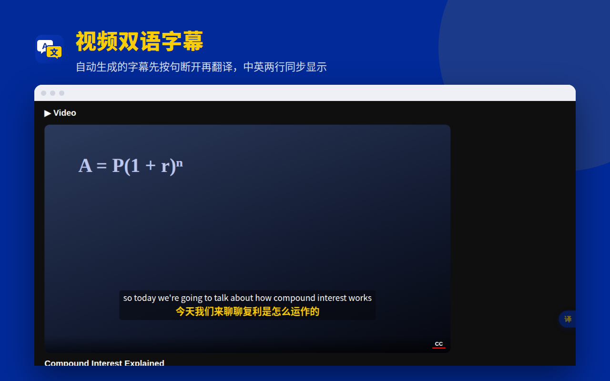
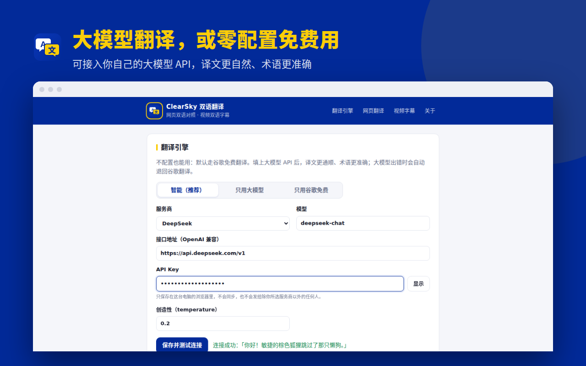

商品详情
说明（Description）
ClearSky 双语翻译：读外文网页、看外文视频，一个插件搞定。 【网页翻译】 • 双语对照：每段原文下方显示译文，适合阅读外文资料、研报、新闻 • 仅显示译文：整页替换成中文，链接照常可点 • 两种模式随时切换，切换不重复请求，速度快、省费用 • 只翻译你看到的部分，长页面不卡顿；网页后加载的内容也会自动翻译 • 自动跳过代码块、输入框和本来就是中文的段落 • 可设置"总是翻译此网站"，打开即译 • 5 种译文样式：简洁、柔和灰、虚线、荧光笔、引用竖线 • 快捷键 Alt+A、右键菜单、页面悬浮按钮，三种方式一键翻译 【视频双语字幕（YouTube）】 • 打开字幕后自动换成双语字幕：原文在上、译文在下 • 自动生成的字幕先按句断开再翻译，不再是一个词一个词地跳 • 优先翻译当前播放位置，拖动进度条也能马上跟上 • 字号、颜色、背景透明度可调，可只显示译文 【翻译引擎】 • 零配置：默认使用谷歌免费翻译 • 接入大模型：DeepSeek、通义千问（阿里云百炼）、Kimi、智谱 GLM、OpenAI、OpenRouter，或任何 OpenAI 兼容接口 • 智能模式：大模型出错时自动退回免费翻译，不会翻译到一半卡住 【隐私】 • 没有自己的服务器，不收集任何浏览数据 • 文字只发送给你选择的翻译服务 • API Key 只保存在本机浏览器，不同步、不上传
类别（Category）
生产工具（Productivity）
语言
中文（简体）
隐私权 · 单一用途
单一用途说明
将网页内容和视频字幕翻译成用户选择的语言，并以双语对照或替换原文的方式显示。
隐私权 · 权限理由
activeTab
用户点击插件图标、按快捷键或使用右键菜单翻译当前网页时，临时访问当前标签页，识别段落并插入译文。插件不常驻、不读取未被用户操作的网页。
scripting
配合 activeTab，在用户主动发起翻译时向当前标签页注入翻译脚本和样式；以及为用户选择“总是翻译”的单个网站注册自动翻译脚本。
storage
保存用户的翻译设置（目标语言、显示方式、字幕样式、总是翻译的网站列表）和 API Key，均只保存在用户本地浏览器中。
contextMenus
提供右键菜单“翻译此页面 / 恢复原文”和“切换双语 / 仅译文”，方便用户一键操作。
主机权限（Host permission）
www.youtube.com：读取播放器已加载的字幕，显示双语字幕。translate.googleapis.com：默认翻译引擎，用于获取译文。可选主机权限：仅在用户开启某个网站的“总是翻译此网站”或配置大模型接口时，针对该单个域名申请，可随时移除。
远程代码（Remote code）
否，我没有使用远程代码。（No, I am not using remote code.）
隐私权 · 数据使用
勾选项
只勾选“网站内容（Website content）”。其他类别都不勾。下面三项声明全部勾选。
隐私权政策网址
https://answer2023.github.io/clearsky-translate/privacy.html
分发
付费 / 地区
免费；所有地区
图片（拖到上传框）
store-icon-128.png
截图 1screenshot-1-bilingual.png
截图 2screenshot-2-replace.png
截图 3screenshot-3-video.png
截图 4screenshot-4-engine.png小型宣传图块 440×280
promo-small-440x280.png顶部宣传图块 1400×560（选填）
promo-marquee-1400x560.png